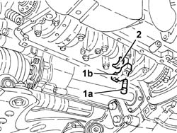
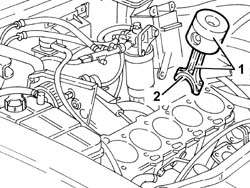
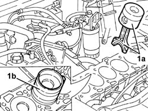

1028H21 piston with connecting rod - r r
- Path
- Procedures > 10 ENGINE > 1028 PISTONS AND CONNECTING RODS > 1028H pistons and connecting rods > 1028H21 piston with connecting rod - r r
- Kind
- repair procedure (removal / refitting; the operation number is the code)
- Applies to
- engines: 1.9 JTD 8v , 2.4 JTD 10v; all production periods
- Interactive page
- https://sloeber94.github.io/elrnDB-a156/en/#/3237764
Applies to: engines: 1.9 JTD 8v , 2.4 JTD 10v; all production periods
 Removing
Removing
 Refitting
RefittingPosition the vehicle on the ramp.
4450B10 Front WHEEL (one) - R.R. (Right side)
7055B64 Engine compartment DUST shield in front wheel arch (one), left or right - R.R. (Left side)
1092G10 single engine belt r r
1092A12 crankshaft pulley - r+r for versions with air conditioner
1032D12 timing system protective cover(s) - r + r
1008C10 power unit upper reaction link r r
1016A10 sound-proofing cover - r + r .
1008C14 engine link bracket - r r
1016C10 cylinder head - r + r and replace gasket
1076B50 exhaust pipe attachment to engine - r + r
1084A16 oil dip stick pipe - r r
1020A20 crank case oil sump - r + r clean seals for sealant application
1. Undo the bolts (1a) and remove the connecting rod cap (1b).
2. Remove the bottom big end bearing shell.

Applies to: engines: 1.9 JTD 8v , 2.4 JTD 10v; all production periods
Lower the vehicle.
1. Remove the connecting rod with the piston.
2. Remove the upper connecting rod half-bearing.

Applies to: engines: 1.9 JTD 8v , 2.4 JTD 10v; all production periods
Refitting
Removing1. Fit the connecting rod - piston assembly and upper bearing shell (1a) using a suitable fitting tool (1b).

Applies to: engines: 1.9 JTD 8v , 2.4 JTD 10v; all production periods
Raise the vehicle.
Fit the connecting rod cap complete with half-bearing, and tighten the bolts to the specified torque.
 | Fastening | Component | Ø | Value (daNm) |
|---|---|---|---|---|
- | Bolt | BIG END BEARING CAPS | M9 | 2.4 - 2.6 - +60° |
Use the tool for angular tightening of the connecting rod cap bolts.
 | Name | Country |
|---|---|---|
- | Protractor | 1.860.942.000 |
1020A20 crank case oil sump - r + r clean seals for sealant application
1084A16 oil dip stick pipe - r r
1076B50 exhaust pipe attachment to engine - r + r
1016C10 cylinder head - r + r and replace gasket
1008C14 engine link bracket - r r
1016A10 sound-proofing cover - r + r .
1008C10 power unit upper reaction link r r
1032D12 timing system protective cover(s) - r + r
1092A12 crankshaft pulley - r+r for versions with air conditioner
1092G10 single engine belt r r
7055B64 Engine compartment DUST shield in front wheel arch (one), left or right - R.R. (Left side).
4450B10 Front WHEEL (one) - R.R. (Right).
Remove the car from the ramp.
Topics linked from this page (14)
- 1008C10 power unit upper reaction link r r
- 1008C14 engine link bracket - r r
- 1016A10 sound-proofing cover - r + r
- 1016C10 cylinder head - r + r and replace gasket
- 1020A20 crank case oil sump - r + r clean seals for sealant application
- 1032B14 toothed timing belt - r + r for timing adjustment or replacement versions with air conditioner
- 1032D12 timing system protective cover(s) - r + r
- 1076B50 exhaust pipe attachment to engine - r + r
- 1084A16 oil dip stick pipe - r r
- 1092A12 crankshaft pulley - r+r for versions with air conditioner
- 1092G10 single engine belt r r
- 4450B10 Front WHEEL (one) - R.R.
- 5530B10 battery - r+r
- 7055B64 Engine compartment DUST shield in front wheel arch (one), left or right - R.R.